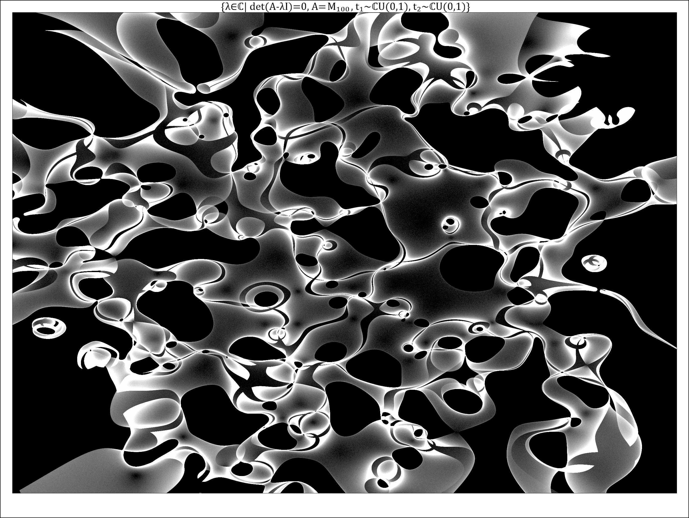
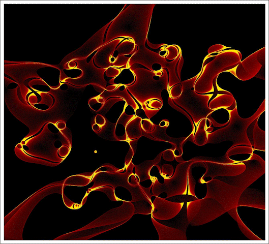

Random matrices have elements replaced with random values of specified domain and domain or distribution. Then complex eigenvalues are produced and plotted, generally as a density plot. If done for enough matrices (thousands to billions) then elegant and ghostly images gradually appear.
I first encountered this type of image in a post from Professor Simone Conradi, who shared an image of "eigenman" which looks a lot like a person. It took me a while to figure out how this was done, but the Bohemian Matrices website and Professor Conradi's github repo really helped.
Although I initially wanted to implement this as a DirectX compute shader, I opted to use a CPU-based approach instead due to the availability of the Eigen library. It runs with a large number of threads and heats up the computer room quite a bit. The images on this site generally render 10-60 frames per second. While simple images of this type can also render quickly, high-quality images and videos can take hours to days.
With thanks to Simone Conradi and Bohemian Matrices.

Eigenvalue density plot of order 100 complex random matrices
Animated eigenvalue density plot of order 100 complex random matrices